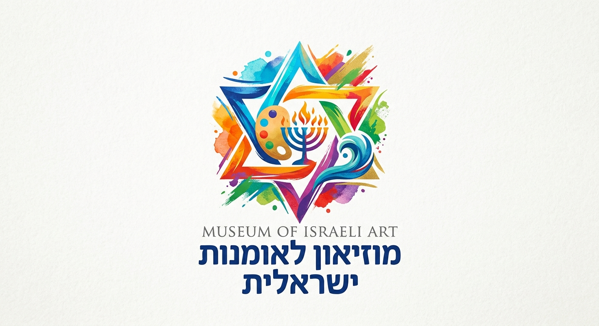

ברוכים הבאים למוזיאון לאומנות ישראלית! המוזיאון שלנו מהווה בית חם ליצירה מקומית ועכשווית ומציג מגוון רחב של יצירות מרהיבות, תערוכות מתחלפות ואוספים ייחודיים של אמנים מובילים מהארץ ומכל העולם. אנו מזמינים אתכם לצאת למסע מרתק בין סגנונות אמנותיים שונים, לגלות את הסיפורים העמוקים שמאחורי היצירות וליהנות מחוויה תרבותית מעשירה, מרגשת ויוצאת דופן.
האומנות הישראלית היא פסיפס חי ונושם של זהויות, זיכרונות, נופים ורגשות. בין כתלי המוזיאון תוכלו להתרשם מהדיאלוג המתמיד שבין המסורת לחדשנות – החל מציורי שמן קלאסיים של נופי הארץ והווי החיים המקומי, ועד ליצירות פיסול וקונספט עכשוויות המאתגרות את המחשבה. כל גלריה במוזיאון מציעה מבט ייחודי על התפתחות התרבות והאמנות לאורך השנים.
אנחנו מאמינים שאומנות נועדה לגעת בכל אחד ואחת. הביקור במוזיאון אינו רק התבוננות פסיבית, אלא חוויה רב-חושית מעוררת השראה. החללים שלנו מעוצבים בקפידה כדי לאפשר לכם להתנתק משגרה היומיום, להעמיק בכל פרט, ולהתחבר לטקסטורות, לצבעים ולאורות שמחייים את האולם.
לצד אוספי הקבע המרשימים, המוזיאון מארח באופן שוטף תערוכות מתחלפות של אמנים מודרניים ומבטיחים. אנו מציעים מגוון סיורים מודרכים, סדנאות יצירה, ומפגשים מרתקים עם האמנים עצמם. בין אם אתם חובבי אומנות מושבעים ובין אם זהו הביקור הראשון שלכם, תמיד תמצאו אצלנו תערוכה חדשה לגלות.
אנחנו מזמינים אתכם לקחת פסק זמן, לשוטט בין הגלריות השונות, להתרשם מהאוספים העשיריםולהתחבר לרוח היצירה. צפיה מהנה בגלריות האתר, נשמח לראותכם בין אורחינו במוזיאון!